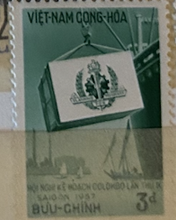
| SOURCE | TITLE| IMAGE MATCH | click to source page |
| Tripod (Lycos) | Vietnam, 1957 Stamp Year-Page 1 of 2 |  |
| eBay | Vintage stamps, Lot of 5 unused, Vietnam, 1957, Cong-thu, Buu Chinh, .20d - 3d | eBay | 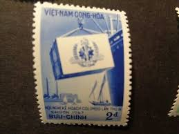 |
| eBay | 1957 RVN South Vietnam Stamp MNH Colombo Plan Saigon 2D | eBay |  |
| Tripod (Lycos) | VietNam, 1958 Stamp Year-Page 1 of 2 | 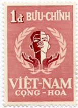 |
| Why is Vietnamese passport green? : r/VietNam | 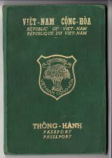 | |
| Spink & Son | Foreign Countries Vietnam 1951 Native Landscapes series stamp booklet including Pongour Waterfa... | Spink | 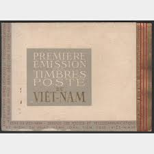 |
| Scribd | Building Code of Vietnam - Volume-II | PDF | 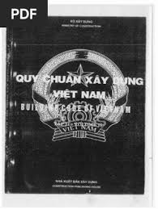 |
| WorthPoint | ARVN 5th Div Certificate : Vietnam RVN SVN QLVNCH | #1924540593 | 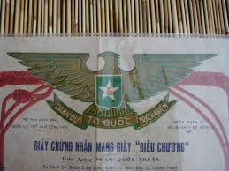 |
| Collectors Weekly | Vintage Passports and Travel Documents | Collectors Weekly | 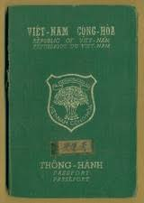 |
| Scribd | Building Code of Vietnam - Volume-II | PDF | 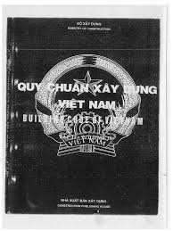 |
| eBay | Vietnam War Poster White Dove For World Peace And Life Against Nuclear War 12X16 | eBay | 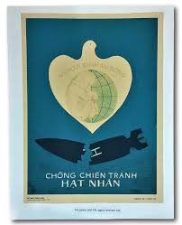 |
| eBay | South Vietnam unissued Industrial Development imperforate stamp | eBay | 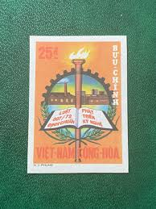 |
| eBay | Australia Flag Stamps Official UNICEF Proof Edition of First Day of Issue, '84 | eBay | 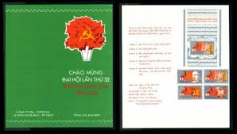 |
| eBay | VIETNAM, 1951. Souvenir Booklet, Complete, Mint ** | eBay | 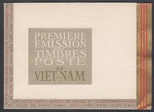 |
| Colnect | Stamp: Sinking of USS Card (Vietcong, National Liberation Front(The 4th Anniversary of the National Liberation Front) Mi:VN-VC 8,Sn:VN-VC 8,Yt:VN-VC 8,Sg:VN NLF8 📮 | 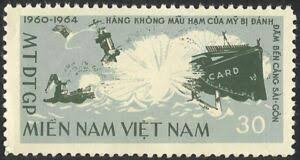 |
| eBay | Vietnam War Original ARVN ID Identification Card Tieu Doan | eBay | 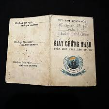 |
| South Vietnamese passport : r/TroChuyenLinhTinh | 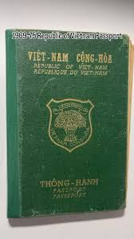 | |
| The names of the provinces during the Republic of Vietnam sound so cool: Kien Tuong, Dinh Tuong, Kien Hoa, Khanh Hung, ... : r/VietNamNation | 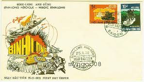 | |
| eBay | VIETNAM ~ ARMY DISTINGUISHED SERVICE ORDER CERTIFICATE-FIRST CLASS w/Printing | eBay | 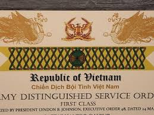 |
| eBay | SAIGON MILITIA - Rare ID Card - 1972 Peoples Defense Force - Vietnam War - C.179 | eBay | 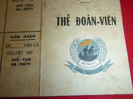 |
| 320 Country - Vietnam ideas | vietnam, vietnam travel, beautiful vietnam | 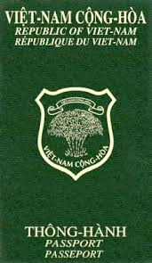 | |
| eBay | PF Vietnamese Stamps for sale | eBay | 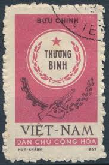 |
| Threads | A rare exit visa from North Vietnam 1969-70 | 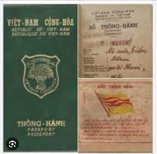 |
| AbeBooks | Chien Cu. Do Viet-Cong Da Xu Dung Tai Mien Nam Hoac Co The Dang Duoc Xu-Dung Tai Mien Bac Viet-Nam. War Material used by the Viet Cong in South Vietnam or Presumably | 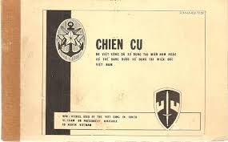 |
| WorthPoint | south vietnam indochina passport 1969 female ly moui | #26464569 | 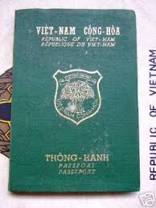 |
| Our Passports | Official passport used for Vietnam - Our Passports | 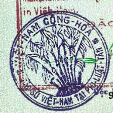 |
| Stamp Community Forum | Vietnam Postal History During The Vietnam War - Page 3 - Stamp Community Forum | 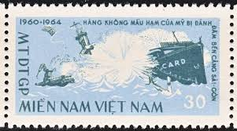 |
| pjedro.sk | Vietnam War in Vietnamese postage stamps - Pjedro Imagination | 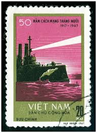 |
| How to help Viet Kieu with the first issuance of the CCCD with only a passport and no permanent registration? | 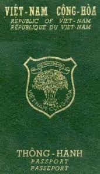 | |
| Unknown >English : r/translator | 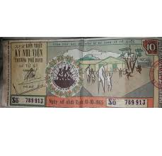 | |
| WordPress.com | When Heaven Fell | Ethnically Incorrect Daughter | 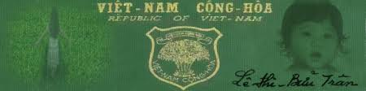 |
| dirkverdoorn.com | Small Named USMC Vietnam War Advisor Lot | 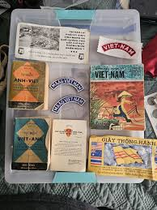 |
| WorthPoint | South Vietnam FDC 1965 Higher Education 4 Different Designs 266-269 (L40) | #1856593995 | 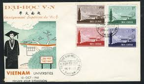 |
| owlsandbooks.co.uk | BOOK STAMPS VIETNAM | 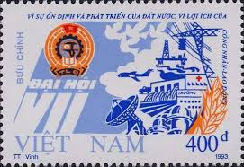 |
| vietnambanknote.com | 2020 year p-124 500,000 500.000 500000 dong Vietnam polymer banknotes | Vietnambanknotes | 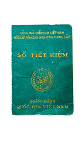 |
| PicClick | VIETNAM WAR VINTAGE 1967 1ST INFANTRY DIVISION ZIPPO LIGHTER $42.00 - PicClick | 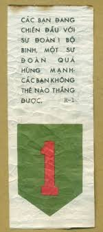 |
| eBay | SOUTH VIETNAM 1970 Label Farmers' Day and President Nguyen Van Thieu MNH | eBay | 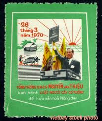 |
| Wikimedia.org | File:South Vietnamese passport (issued on 11 December 1967 in Saigon) 01.png - Wikimedia Commons | 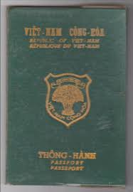 |
| eBay | Vietnam War Poster Reunification Train Hanoi to Saigon Country is United 12X16in | eBay | 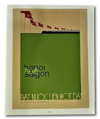 |
| PICRYL | South Vietnamese passport (issued on 11 December 1967 in Saigon) 02 - PICRYL - Public Domain Media Search Engine Public Domain Search | 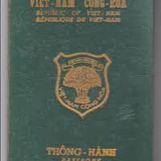 |
| eBay | PSY-OP's LEAFLET - SURRENDER or DIE - US ARMY 1st INFANTRY, Vietnam War - C.195 | eBay | 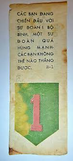 |
| Wikipedia | Emblem of Vietnam - Wikipedia | 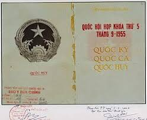 |
| AbeBooks | Vietnam Postage Stamp Catalogue. Two Volumes.: (1990) | Asia Bookroom ANZAAB/ILAB | 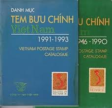 |
| eBay | SOUTH VIETNAM FIRST DAY COVERPHAT HUY TINH THAN THAN HUU VOI DONG MINH22-06-1968 | eBay | 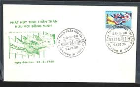 |
| eBay | CHESS OLYMPIAD Mint Never hinged Romania 1992 Souvenir Sheet Scott # 3748 | eBay | 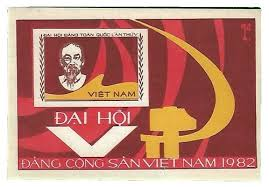 |
| eBay | Vietnam War Leaflet, Surrender to US Army 1st Infantry | eBay | 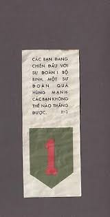 |
| eBay | Print Patch - RUFF PUFFS - Saigon Rural Development Force - Vietnam War - V.433 | eBay | 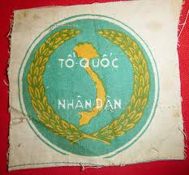 |
| Wikimedia.org | QUAN-LlfC VleT-NAM CQNG-HOA | 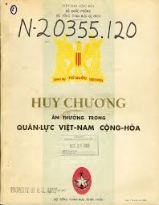 |
| cloud9-jp.net | Stamp Collection Album Prophila Stockbook Stamp Album - 60 White Pages With Brown Padded Cover Philately Stockbook | 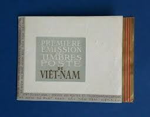 |
| Colnect | Stamp: Military Medal And Invalid's Badge (Vietnam(War Invalids Stamps (1978)) Mi:VN PF29I 📮 | 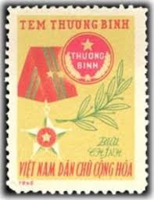 |
| lastdodo.com | Stamps from Vietnam [1963-1976] - Viet Cong Stamp catalogue - LastDodo | 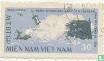 |
| Wikimedia.org | Category:First Republic of Vietnam - Wikimedia Commons | |
| U.S. Militaria Forum | Nguyen Cao Ky, South Vietnam Leader, Dies at 80 - TAPS - U.S. Militaria Forum | |
| Stamp Auction Network | SAN Unattended Live Bidding Catalog Level 3 | |
| saigon-vietnam.fr | Cape St Jacques Vung Tau Indochina | |
| PicClick | SOUTH VIETNAM 1963 FDC Women's Day, Mê Linh Square 203-206 Trung Sister (L487) $7.00 - PicClick | |
| eBay | Architecture PF Asian Stamps for sale | eBay | |
| Wikimedia.org | QUAN-LlfC VleT-NAM CQNG-HOA | |
| Standing Well Back | The IED that sank a US Aircraft Carrier - Standing Well Back |  |
| Pixabay | 1,000+ Free Postage Stamps & Stamp Photos - Pixabay |  |
_01.png){kind=link}